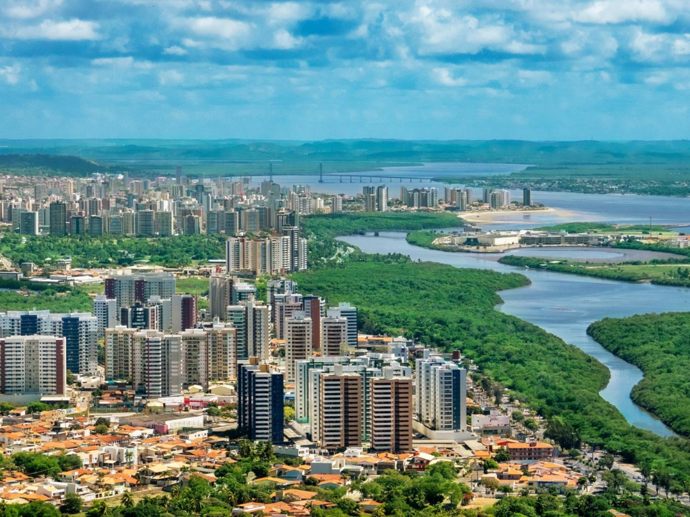

Sergipe é o menor estado do Brasil em extensão territorial, localizado na região Nordeste. Sua capital é Aracaju. O estado é conhecido por suas praias tranquilas, com destaque para a Praia do Saco e a Orla de Atalaia. A economia sergipana baseia-se na agricultura, com produção de laranja, cana-de-açúcar e mandioca, além da indústria e do turismo.

Voltar